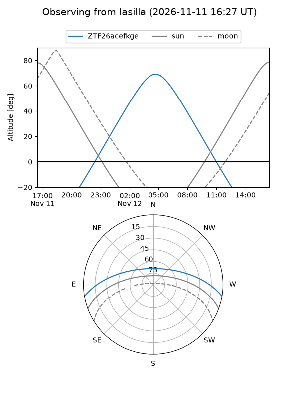
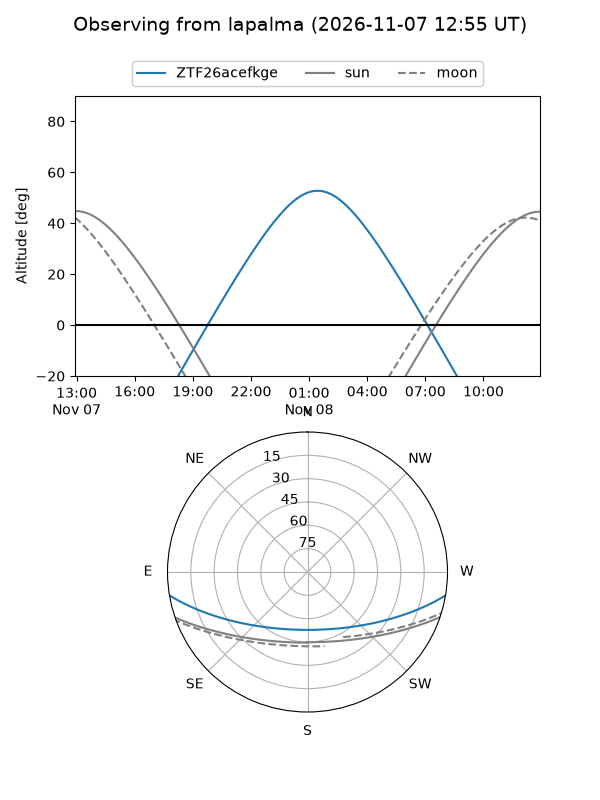
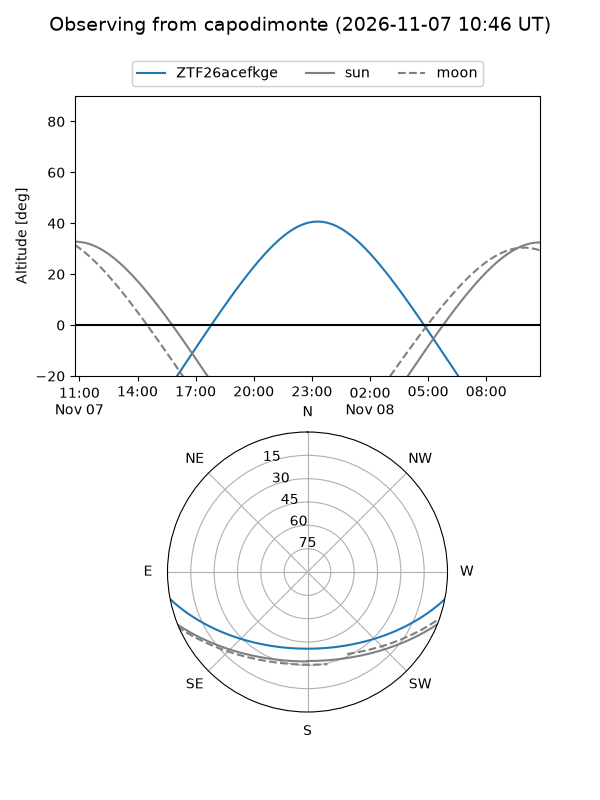
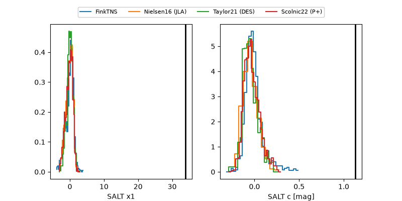

ZTF26acefkge
Target ZTF26acefkge at 2026-11-07 09:39
Aliases and brokers:
FINK-ZTF: ztf.fink-portal.org/ZTF26acefkge
Lasair-ZTF: lasair-ztf.lsst.ac.uk/objects/ZTF26acefkge
ALeRCE-ZTF: alerce.online/object/ZTF26acefkge
Direct TNS query: direct search
alt names
ZTF26acefkge (ztf,fink_ztf)
Coordinates:
equatorial (ra, dec) = 50.5640,-8.55123
equatorial (HMS+DMS) = 03:22:15.36,-08:33:04.42
galactic (l, b) = (192.5738,-49.82793)
Flags:
peak dt: +3.6
Photometry:
last ztfr=19.53
4 ztfr detections
Lightcurve
Visibility



Additional plots
